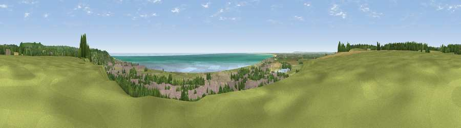

Viewpoint near Lympne
#4897 in England · top 12% of its area beats it · near LympneWhere it is
The exact computed spot (TR 14075 34575). Click the marker for map links.
The view, rendered

A 360° render of this exact spot computed from the terrain model, tree cover and land cover — summer colours, afternoon light, calibrated against photographs of famous viewpoints. Real trees, hedges and buildings will differ in detail.
The panorama
Grey silhouette: terrain skyline in each direction (720 bearings, Earth curvature and refraction included). Dashed green: skyline with trees (+15 m) and buildings (+8 m) as obstacles. Blue strip: how far the ground is visible on each bearing.
Where the view opens
Wedge length = distance to the farthest visible ground on that bearing (vegetation-aware). Rings at 10, 25 and 50 km.
What fills the view
34% grassland · 23% woodland · 17% water · 17% built-up · 5% cropland · 3% bare ground
Angular shares of the visible panorama (visual magnitude), not map area. Landscape diversity 0.69 (0–1 Shannon).
Key numbers
More beautiful places nearby
The staircase of upgrades: each row has a higher view potential than everything closer. Driving times are estimates from straight-line distance, calibrated against real road routing — check an actual route before setting out.
| Place | Direction | Drive | Score |
|---|---|---|---|
| Viewpoint near Lympne | W · 1 km | ~4 min | 71.5 |
| Viewpoint near Lympne | W · 2 km | ~5 min | 72.5 |
| Tolsford Hill | NNE · 4 km | ~9 min | 77.9 |
| Viewpoint near Capel-le-Ferne | ENE · 10 km | ~20 min | 80.2 |
| Viewpoint near Willingdon | WSW · 65 km | ~88 min | 83.4 |
| Wilmington Hill | WSW · 67 km | ~90 min | 85.4 |
| Viewpoint near Alciston | WSW · 71 km | ~94 min | 85.8 |
| Viewpoint near Alciston | WSW · 71 km | ~95 min | 86.8 |
51.07056, 1.05430 · source: screening · position refined by local search. Computed location — check access rights before visiting.